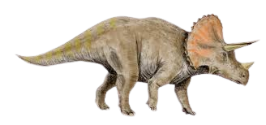
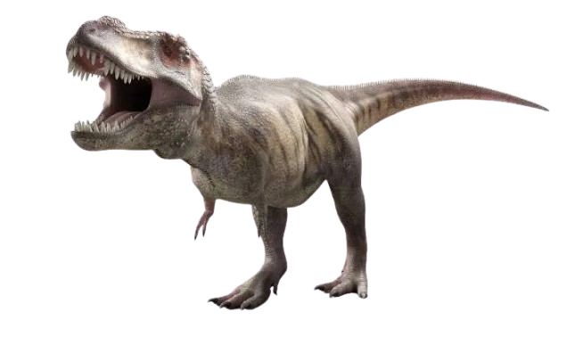
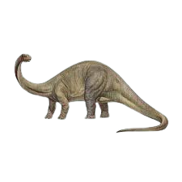
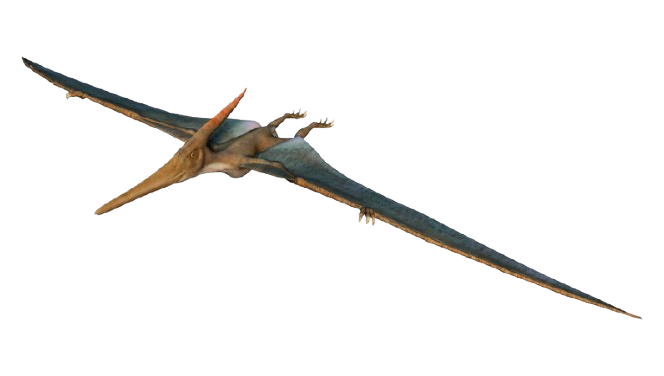

Triceratops is a genus of chasmosaurine ceratopsian dinosaur that lived during the late Maastrichtian age of the Late Cretaceous period,
about 68 to 66 million years ago on the island continent of Laramidia, now forming western North America.

Tyrannosaurus is a genus of large theropod dinosaur. The type species Tyrannosaurus rex, often shortened to T. rex or colloquially t-rex,
is one of the best represented theropods. It lived throughout what is now western North America, on what was then an island continent known as Laramidia.

Brontosaurus is a genus of herbivorous sauropod dinosaur that lived in present-day United States during the Late Jurassic period.

Pterodactylus is a genus of extinct pterosaurs. It is thought to contain only a single species, Pterodactylus antiquus, which was the first pterosaur to be named and identified as a flying reptile and one of the first prehistoric reptiles to ever be discovered.